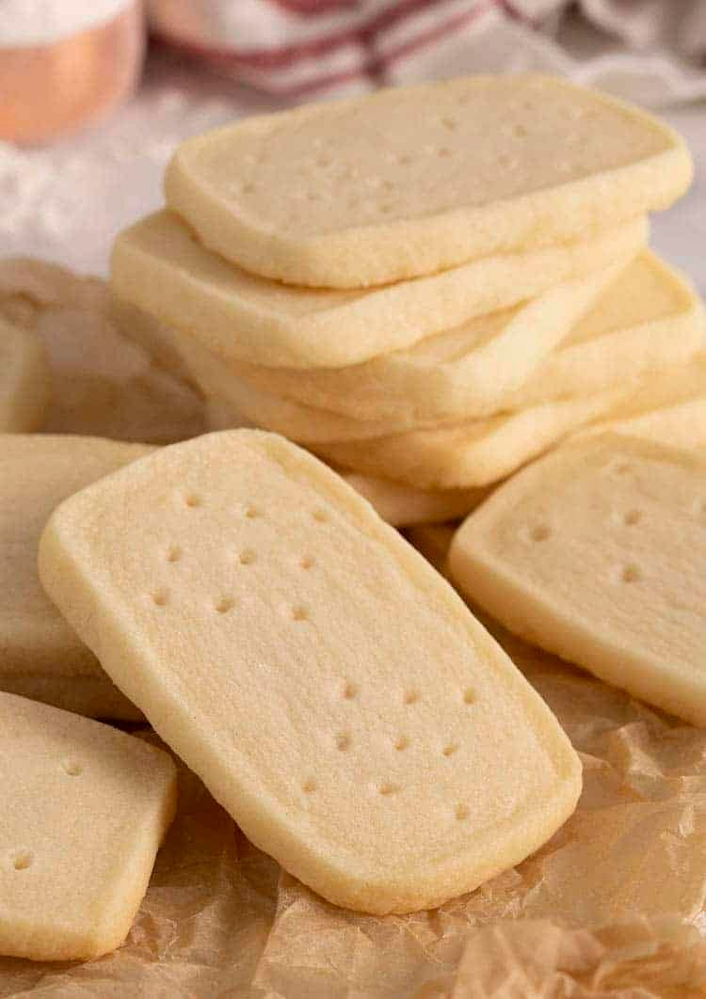

Shortbread cookies

Description
Shortbread cookies aren’t just for the holidays! These delicious, perfectly sweet treats have a wonderful crisp texture and just dissolve in your mouth. I think they’re the perfect pairing for a cup or coffee or tea but fair warning, if you make a batch you’ll be snacking on them ALL day long!
Ingredients
- 10 tbsp unsalted butter unsalted butter, at room temperature 142g
- 1/2 cup confectioners' sugar
- 1/2 teaspoon pure vanilla extract
- 1 1/2 cups all-purpose flour 180g
- 1/2 teaspoon kosher salt optional
Steps
- In a stand mixer fitted with a paddle attachment, beat butter and vanilla extract until creamed.
- Add confectioners sugar and salt; mix until combined.
- Scrape bowl down and add flour while beating on low. Scrape bowl once more and mix until combined.
- Shape the dough into a rectangular prism, wrap in plastic and chill until firm. At least an hour.
- Preheat oven to 350F (177C). Use a sharp knife to cut 1/2 inch thick slices
- Place slices, spaced at least an inch apart onto a baking sheet lined with a silicone mat or parchment paper.
- Use a fork or skewer to indent a pattern onto the top.
- Bake for about 10 minutes, rotating baking sheet in the oven halfway through.
- Transfer to a wire sheet to cool.